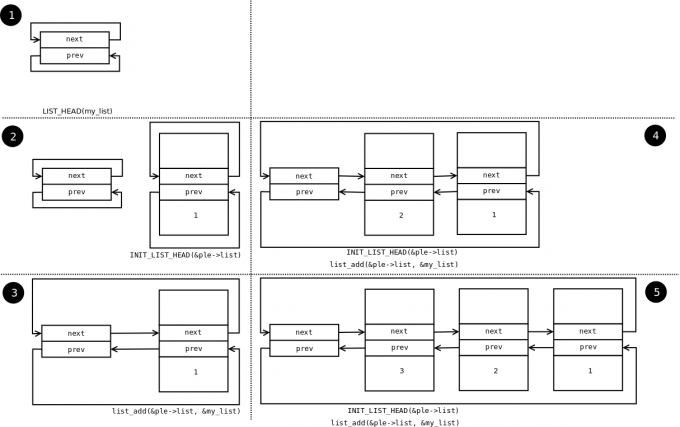

SO2 Lab 02 - Kernel API¶
实验目标¶
- 熟悉基本的 Linux 内核 API
- 描述内存分配机制
- 描述锁定（locking）机制
概述¶
本实验旨在帮助你掌握 Linux 内核编程的一些基本概念和函数。你需要注意，内核编程和用户空间编程有很多不同之处。内核是一个独立运行的实体，不能调用用户空间的任何库，包括 libc 在内。所以，你不能使用 printf、malloc、free、open、read、write、memcpy、strcpy 等常见的用户空间函数。简而言之，内核编程需要使用一套全新的、与用户空间 API 没有关联的独立 API，无论是 POSIX 还是 ANSI C 都不适用于内核编程。
访问内存¶
内存的访问和分配是内核编程中一个重要且不同的方面。内核编程与物理机器紧密相关，因此对内存管理的规则非常重要。首先，它涉及以下几种类型的内存：
- 物理内存
- 内核地址空间中的虚拟内存
- 进程地址空间中的虚拟内存
- 常驻内存（resident memory）——可以确定所访问的页面存在于物理内存中
由于操作系统实现的虚拟内存机制，进程地址空间中的虚拟内存不能被视为常驻内存：页面可能会被交换出去，或者由于需求分页机制的原因可能根本不存在于物理内存中。内核地址空间中的内存可以是常驻或非常驻的。模块的数据和代码段以及进程的内核栈是常驻的。动态内存可能是常驻或非常驻的，具体取决于它是如何被分配的。
在使用常驻内存时，一切都很简单：可以随时访问内存。但是如果使用非常驻内存，则只能从特定的上下文中访问。只能从进程上下文中访问非常驻内存。从中断上下文访问非常驻内存会导致不可预知的结果，因此当操作系统检测到此类访问时，将采取严厉的措施：阻塞或重置系统，以防止严重破坏。
内核不能直接访问进程的虚拟内存。一般来说，强烈不建议访问进程的地址空间，但是在某些情况下，设备驱动程序需要这样做。典型情况是设备驱动程序需要访问用户空间的缓冲（buffer）区。为了避免访问无效的内存区域，设备驱动程序不能直接访问缓冲区，而要通过特殊功能。
内存方面，内核与用户空间的另一个区别是堆栈（stack），内核堆栈的大小是固定且有限的。例如，Linux 的堆栈大小为 4K，而 Windows 的堆栈大小为 12K。因此，我们应该避免在堆栈上分配大型结构或进行递归调用。
执行上下文¶
我们可以根据内核执行的情况，把上下文分为两种：进程上下文和中断上下文。如果我们是因为系统调用而在内核中运行代码，或者是在内核线程中运行，那么我们就在进程上下文中。如果我们是在响应中断或执行延迟操作的函数时运行，那么我们就在中断上下文中。
一些内核 API 调用可以阻塞当前进程。常见的例子是使用信号量（semaphore）或等待条件。在这种情况下，进程被置于“等待”状态，而另一个进程在运行。当从中断上下文中调用可能导致当前进程被挂起的函数时，就会出现有趣的情况。在这种情况下，没有当前进程，因此结果是不可预测的。每当操作系统检测到这种情况时，将生成一个错误条件，导致操作系统关闭。
锁定¶
内核编程中最重要的特性之一是并行性（parallelism）。Linux 支持具有多个处理器和内核可抢占性的 SMP 系统。这使得内核编程更加困难，因为对全局变量的访问必须与自旋锁原语（primitives）或阻塞原语同步。虽然建议使用阻塞原语，但在中断上下文中无法使用它们，因此在中断的上下文中唯一的锁定解决方案是自旋锁。
自旋锁是一种实现互斥的方法。它不会让当前进程进入挂起状态，而是让它一直忙等待（在一个 c:func:while 循环中检查锁是否可用）。运行在由自旋锁保护的临界区域的代码不允许挂起当前进程（它必须遵守中断上下文中的执行条件）。此外，除非发生中断，否则 CPU 不会被释放。由于此机制，最好尽可能使持有自旋锁的时长短一些。
可抢占性（preemptivity）¶
Linux 使用的是可抢占内核。这里，我们需要明确区分可抢占多任务（preemptive multitasking）和可抢占内核两个概念。可抢占多任务是指，当一个进程在用户空间运行时，一旦其分配的时间片（时间片段）到期，操作系统会强制中断该进程，转而运行另一个进程。而如果一个在内核模式下运行的进程（通常是作为系统调用的结果），可以被中断以便运行另一个进程，那么我们就说这个内核具有可抢占性。
由于内核的可抢占性，即使在单处理器环境下，当我们需要在可能来自不同进程上下文的两段代码之间共享资源时，我们也必须使用同步原语进行保护。
Linux 内核 API¶
表示错误的约定¶
在 Linux 内核编程中，调用函数的返回值被用来表示成功与否，这个约定与 UNIX 编程相同：0 代表成功，非 0 值代表失败。如果失败，返回值应该是负数，如下面的例子所示：
if (alloc_memory() != 0)
return -ENOMEM;
if (user_parameter_valid() != 0)
return -EINVAL;
可在 include/uapi/asm-generic/errno-base.h 和 include/uapi/asm-generic/ernno.h 中找到错误的详尽列表和摘要解释。
字符串处理¶
在 Linux 中，内核程序员可以使用常见的常规函数来处理字符串，包括：strcpy() 、 strncpy()、 strlcpy() 、strcat()、 strncat()、 strlcat()、 strcmp()、 strncmp()、 strnicmp()、 strchr()、 strnchr()、 strrchr()、 strstr()、 strlen()、 memset()、 memmove()、 memcmp() 等。这些函数在 include/linux/string.h 头文件中声明，并在内核的 lib/string.c 文件中实现。
printk¶
在内核中，与 printf 等效的函数是 printk，它在 include/linux/printk.h 中定义。printk() 的语法与 printf 非常相似。printk() 的第一个参数决定了当前日志所属的日志类别：
#define KERN_EMERG "<0>" /* 系统不可用 */
#define KERN_ALERT "<1>" /* 必须立即采取行动 */
#define KERN_CRIT "<2>" /* 严重情况 */
#define KERN_ERR "<3>" /* 错误情况 */
#define KERN_WARNING "<4>" /* 警告情况 */
#define KERN_NOTICE "<5>" /* 正常但重要的情况 */
#define KERN_INFO "<6>" /* 信息 */
#define KERN_DEBUG "<7>" /* 调试级别的消息 */
因此，在内核中发送警告消息的方式如下：
printk(KERN_WARNING "my_module 的输入字符串 %s\n", buff);
如果在 printk() 调用中缺少日志级别，日志记录将使用调用时的默认级别。注意，只有当消息级别超过控制台上设置的默认级别时，使用 printk() 发送的消息才会在控制台上可见。
为了减小使用 printk() 时的行长度，建议使用以下辅助函数（help functions）而不是直接调用 printk() ：
pr_emerg(fmt, ...); /* 类似于 printk(KERN_EMERG pr_fmt(fmt), ...); */
pr_alert(fmt, ...); /* 类似于 printk(KERN_ALERT pr_fmt(fmt), ...); */
pr_crit(fmt, ...); /* 类似于 printk(KERN_CRIT pr_fmt(fmt), ...); */
pr_err(fmt, ...); /* 类似于 printk(KERN_ERR pr_fmt(fmt), ...); */
pr_warn(fmt, ...); /* 类似于 printk(KERN_WARNING pr_fmt(fmt), ...); */
pr_notice(fmt, ...); /* 类似于 printk(KERN_NOTICE pr_fmt(fmt), ...); */
pr_info(fmt, ...); /* 类似于 printk(KERN_INFO pr_fmt(fmt), ...); */
pr_debug(fmt, ...); /* 类似于 printk(KERN_DEBUG pr_fmt(fmt), ...); */
一个特殊情况是 pr_debug()，它只在定义了 DEBUG 宏或使用动态调试时才会调用 printk 函数。
内存分配¶
在 Linux 内核中，只能分配驻留内存。要想分配驻留内存，可以使用 kmalloc() 调用。下面是一个典型的 kmalloc() 调用示例：
#include <linux/slab.h>
string = kmalloc (string_len + 1, GFP_KERNEL);
if (!string) {
//报告错误：-ENOMEM;
}
如你所见，第一个参数表示分配区域的字节大小。这个函数返回一个指向内核中可直接使用的内存区域的指针，如果无法分配内存，则返回 NULL。第二个参数指定了如何进行分配，最常用的取值有：
GFP_KERNEL——使用此值可能导致当前进程被挂起。因此，它不能在中断上下文中使用。GFP_ATOMIC——使用此值确保kmalloc()函数不会挂起当前进程。它可以随时使用。
与 kmalloc() 函数相对应的是 kfree()，它接收由 kmalloc() 分配的区域作为参数。该函数不会挂起当前进程，因此可以从任何上下文中调用。
列表¶
由于链表经常被使用，Linux 内核 API 提供了一种统一的方式来定义和使用链表。这涉及在我们希望将其视为链表节点的结构中使用 struct list_head 元素。 struct list_head 在 include/linux/list.h 中定义，同时还定义了所有其他操作链表的函数。以下代码展示了 struct list_head 的定义，以及在 Linux 内核中另一个众所周知的结构中使用该类型的元素的示例：
struct list_head {
struct list_head *next, *prev;
};
struct task_struct {
...
struct list_head children;
...
};
操作链表的常用惯例如下：
LIST_HEAD(name)用于声明链表的标记（sentinel）。INIT_LIST_HEAD(struct list_head *list)()用于在进行动态分配时，通过设置链表字段next和prev，来初始化链表的标记。list_add(struct list_head *new, struct list_head *head)()将new指针所引用的元素添加到head指针所引用的元素之后。list_del(struct list_head *entry)()删除属于列表的entry地址处的项目。list_entry(ptr, type, member)()返回列表中包含元素ptr的类型为type的结构，该结构中具有名为member的成员。list_for_each(pos, head)使用pos作为游标来迭代列表。list_for_each_safe(pos, n, head)使用pos作为游标，n作为临时游标来迭代列表。此宏用于从列表中删除项目。
以下代码展示了如何使用这些惯例：
#include <linux/slab.h>
#include <linux/list.h>
struct pid_list {
pid_t pid;
struct list_head list;
};
LIST_HEAD(my_list);
static int add_pid(pid_t pid)
{
struct pid_list *ple = kmalloc(sizeof *ple, GFP_KERNEL);
if (!ple)
return -ENOMEM;
ple->pid = pid;
list_add(&ple->list, &my_list);
return 0;
}
static int del_pid(pid_t pid)
{
struct list_head *i, *tmp;
struct pid_list *ple;
list_for_each_safe(i, tmp, &my_list) {
ple = list_entry(i, struct pid_list, list);
if (ple->pid == pid) {
list_del(i);
kfree(ple);
return 0;
}
}
return -EINVAL;
}
static void destroy_list(void)
{
struct list_head *i, *n;
struct pid_list *ple;
list_for_each_safe(i, n, &my_list) {
ple = list_entry(i, struct pid_list, list);
list_del(i);
kfree(ple);
}
}
列表的演变可以在下图中看到：
{kind=link}
从上面的例子可以看出，通过 list_add 宏引入了堆栈类型的行为，并使用了标记。
通过上述示例可以看出，定义和使用一个（双向）列表的方法是通用的，并且同时不引入额外的开销。struct list_head 用于维护列表元素之间的链接。可以注意到，对列表的迭代也是使用这个结构进行的，使用 list_entry 可以获取列表元素。这种实现和使用列表的思想并不新鲜，在 20 世纪 80 年代，Donald Knuth 的《计算机程序设计艺术》中已经有描述。
在 include/linux/list.h 头文件中介绍并且解释了几个内核列表函数和宏定义。
自旋锁¶
spinlock_t （在 linux/spinlock.h 中定义）是在 Linux 中实现自旋锁概念的基本类型。它描述了自旋锁，与自旋锁相关的操作有 spin_lock_init() 、 spin_lock() 、 spin_unlock()。以下是一个使用示例：
#include <linux/spinlock.h>
DEFINE_SPINLOCK(lock1);
spinlock_t lock2;
spin_lock_init(&lock2);
spin_lock(&lock1);
/* 临界区（critical region） */
spin_unlock(&lock1);
spin_lock(&lock2);
/* 临界区 */
spin_unlock(&lock2);
在 Linux 中，你可以使用读写自旋锁来解决读者—写者问题。这种类型的锁由 rwlock_t 标识，并且可以使用以下函数来操作读写自旋锁： rwlock_init() 、 read_lock() 以及 write_lock() 。以下是使用读写自旋锁的示例：
#include <linux/spinlock.h>
DEFINE_RWLOCK(lock);
struct pid_list {
pid_t pid;
struct list_head list;
};
int have_pid(struct list_head *lh, int pid)
{
struct list_head *i;
void *elem;
read_lock(&lock);
list_for_each(i, lh) {
struct pid_list *pl = list_entry(i, struct pid_list, list);
if (pl->pid == pid) {
read_unlock(&lock);
return 1;
}
}
read_unlock(&lock);
return 0;
}
void add_pid(struct list_head *lh, struct pid_list *pl)
{
write_lock(&lock);
list_add(&pl->list, lh);
write_unlock(&lock);
}
互斥锁（Mutex）¶
互斥锁是一种 struct mutex 类型的变量（定义在 linux/mutex.h 中）。下面列出了用于处理互斥锁的函数和宏：
#include <linux/mutex.h>
/* 互斥锁初始化函数 */
void mutex_init(struct mutex *mutex);
DEFINE_MUTEX(name);
/* 互斥锁获取函数 */
void mutex_lock(struct mutex *mutex);
/* 互斥锁释放函数 */
void mutex_unlock(struct mutex *mutex);
这些操作与在用户空间中进行的经典互斥锁操作或自旋锁操作类似：在进入临界区之前获取互斥锁，在退出临界区之后释放互斥锁。不同于自旋锁，这些操作只能在进程上下文中使用。
原子变量¶
通常，你只需要对简单的变量（如计数器）进行访问同步。为此，可以使用 atomic_t 类型（定义在 include/linux/atomic.h 中），它保存一个整数值。下面是一些可以对 atomic_t 变量执行的操作。
#include <asm/atomic.h>
void atomic_set(atomic_t *v, int i);
int atomic_read(atomic_t *v);
void atomic_add(int i, atomic_t *v);
void atomic_sub(int i, atomic_t *v);
void atomic_inc(atomic_t *v);
void atomic_dec(atomic_t *v);
int atomic_inc_and_test(atomic_t *v);
int atomic_dec_and_test(atomic_t *v);
int atomic_cmpxchg(atomic_t *v, int old, int new);
原子变量的使用¶
原子变量的常见使用方式是存储一个操作的状态（例如，一个标志）。因此，我们可以使用原子变量来标记独占操作。例如，我们可以考虑一个原子变量可以具有 LOCKED 和 UNLOCKED 两个值，如果该变量等于 LOCKED，则特定函数应返回 -EBUSY。下面的代码示例展示了这种用法：
#define LOCKED 0
#define UNLOCKED 1
static atomic_t flag;
static int my_acquire(void)
{
int initial_flag;
/*
* 检查 flag 是否为 UNLOCKED；如果是，则以原子方式将其锁定。
*
* 这个原子操作相当于：
* if (flag == UNLOCKED)
* flag = LOCKED;
* else
* return -EBUSY;
*/
initial_flag = atomic_cmpxchg(&flag, UNLOCKED, LOCKED);
if (initial_flag == LOCKED) {
printk(KERN_ALERT "已经被锁定。\n");
return -EBUSY;
}
/* 在获取锁之后进行操作。 */
[...]
}
static void my_release(void)
{
/* 释放 flag，将其标记为解锁状态。 */
atomic_set(&flag, UNLOCKED);
}
void my_init(void)
{
[...]
/* 原子变量最初处于解锁状态。 */
atomic_set(&flag, UNLOCKED);
[...]
}
以上代码是 trylock（例如 pthread_mutex_trylock() ）的等效代码。
我们还可以使用一个变量来存储缓冲区的大小，并进行相应变量的原子更新。下面是示例代码：
static unsigned char buffer[MAX_SIZE];
static atomic_t size;
static void add_to_buffer(unsigned char value)
{
buffer[atomic_read(&size)] = value;
atomic_inc(&size);
}
static unsigned char remove_from_buffer(void)
{
unsigned char value;
value = buffer[atomic_read(&size)];
atomic_dec(&size);
return value
}
static void reset_buffer(void)
{
atomic_set(&size, 0);
}
void my_init(void)
{
[...]
/* 初始化缓冲和大小 */
atomic_set(&size, 0);
memset(buffer, 0, sizeof(buffer));
[...]
}
原子位操作¶
内核提供了一组函数（在 asm/bitops.h 中），可以以原子方式修改或测试位（bit）。
#include <asm/bitops.h>
void set_bit(int nr, void *addr);
void clear_bit(int nr, void *addr);
void change_bit(int nr, void *addr);
int test_and_set_bit(int nr, void *addr);
int test_and_clear_bit(int nr, void *addr);
int test_and_change_bit(int nr, void *addr);
Addr 表示要修改或测试位的内存区域的地址，nr 是要执行操作的位。
练习¶
Important
要解决练习，你需要执行以下步骤：
- 用模板来准备骨架
- 构建模块
- 将模块复制到虚拟机
- 启动虚拟机并在虚拟机中测试模块。
当前实验名称为 kernel_api。请参阅任务名称的练习。
骨架代码是从位于 tools/labs/templates 的完整源代码示例中生成的。要解决任务，首先要为所有实验生成骨架代码：
tools/labs $ make clean
tools/labs $ LABS=<lab name> make skels
你还可以使用以下命令为单个任务生成骨架代码：
tools/labs $ LABS=<lab name>/<task name> make skels
生成骨架驱动程序后，构建源代码：
tools/labs $ make build
然后，复制模块并启动虚拟机：
tools/labs $ make copy
tools/labs $ make boot
模块将放置在 /home/root/skels/kernel_api/<task_name> 目录中。
或者，我们可以通过 scp 命令复制文件，以避免重新启动虚拟机。有关通过网络连接到虚拟机的详细信息，请参阅 连接到虚拟机。
请查看 练习 部分以获取更详细的信息。
Warning
在开始练习或生成骨架之前，请在 Linux 仓库中运行 git pull 命令，以确保你拥有最新版本的练习。
如果你有本地更改，pull 命令将失败。使用 git status 检查本地更改。如果要保留更改，在 pull 之前运行 git stash，之后运行 git stash pop。要放弃更改，请运行 git reset --hard master。
如果你在 git pull 之前已经生成了骨架，你需要再次生成骨架。
0. 简介¶
使用 LXR 在 Linux 内核中查找以下符号的定义：
struct list_headINIT_LIST_HEAD()list_add()list_for_eachlist_entrycontainer_ofoffsetof
1. Linux 内核中的内存分配¶
生成名为 1-mem 的任务骨架，并浏览 mem.c 文件的内容。观察使用 kmalloc() 函数进行内存分配的情况。
- 编译源代码并使用 insmod 加载
mem.ko模块。- 使用 dmesg 命令查看内核消息。
- 使用 rmmod mem 命令卸载内核模块。
Note
请参阅实验中的 内存分配 部分。
2. 在原子上下文中睡眠¶
生成名为 2-sched-spin 的任务骨架，并浏览 sched-spin.c 文件的内容。
- 根据上述信息编译源代码并加载模块（使用命令 make build 和 make copy ）。
- 注意：插入顺序完成之前需要等待 5 秒时间。
- 卸载内核模块。
- 查找标记为：
TODO 0的行以创建原子段（atomic section）。重新编译源代码并将模块重新加载到内核。
现在你应该会遇到一个错误。查看堆栈跟踪。错误的原因是什么？
Hint
在错误消息中，跟踪包含 BUG 的行查看对错误的描述。在原子上下文中不允许睡眠。在这里原子上下文是处于自旋锁进行锁定操作和解锁操作之间的部分。
Note
schedule_timeout() 函数与 set_current_state 宏结合使用，强制当前进程等待了 5 秒钟。
3. 使用内核内存¶
为名为 3-memory 的任务生成骨架，并浏览 memory.c 文件的内容。请注意带有 TODO 标记的注释。你需要分配 4 个类型为 struct task_info 的结构体并将其初始化（在 memory_init() 中），然后打印并释放它们（在 memory_exit() 中）。
（TODO 1）为
struct task_info结构体分配内存并初始化其字段：
- 将
pid字段设置为作为参数传递的 PID 值；- 将
timestamp字段设置为jiffies变量的值，该变量存储了自系统启动以来发生的滴答数（tick）。（TODO 2）为当前进程、父进程、下一个进程和下一个进程的下一个进程分别分配
struct task_info，并获取以下信息：
- 当前进程的 PID，其可以从
struct task_struct结构体中检索到，该结构体由current宏返回。Hint
在
task_struct中搜索pid。
- 当前进程的父进程的 PID。
Hint
在
struct task_struct结构体中搜索相关字段。查找“parent”。
- 相对于当前进程，进程列表中的下一个进程的 PID。
Hint
使用
next_task宏，该宏返回指向下一个进程的指针（即struct task_struct结构体）。
- 相对于当前进程，下一个进程的下一个进程的 PID。
Hint
调用
next_task宏 2 次。（TODO 3）显示这四个结构体。
- 使用
printk()显示它们的两个字段：pid和timestamp。（TODO 4）释放结构体占用的内存（使用
kfree()）。
Hint
- 你可以使用
current宏访问当前进程。 - 在
struct task_struct结构体中查找相关字段（pid、parent）。 - 使用
next_task宏。该宏返回指向下一个进程的指针（即struct task_struct*结构体）。
Note
struct task_struct 结构体包含两个字段用于指定任务的父进程：
real_parent指向创建任务的进程，或者如果父进程已完成执行，则指向具有 pid 1（init）的进程。parent指示当前任务的父进程（如果任务完成执行，则向该进程报告）。
通常情况下，这两个字段的值是相同的，但在某些情况下它们可能不同，例如使用 ptrace() 系统调用时。
Hint
请查阅实验中的 内存分配 小节。
4. 使用内核列表¶
生成名为 4-list 的任务骨架。浏览 list.c 文件的内容，并注意标有 TODO 的注释。当前的进程将在列表中添加前面练习中的四个结构体。列表将在加载模块时在 task_info_add_for_current() 函数中构建。列表将在 list_exit() 函数和 task_info_purge_list() 函数中打印和删除。
- (TODO 1) 补全
task_info_add_to_list()函数，此函数会分配struct task_info结构体，并将其添加到列表中。- (TODO 2) 补全
task_info_purge_list()函数，此函数会删除列表中的所有元素。- 编译内核模块。按照内核显示的消息加载和卸载模块。
Hint
回顾一下实验中的 列表 部分。在从列表中删除项目时，你需要使用 list_for_each_safe 或 list_for_each_entry_safe 宏。
5. 使用内核列表进行进程处理¶
生成名为 5-list-full 的任务骨架。浏览 list-full.c 文件的内容，并注意标有 TODO 的注释。除了 4-list 的功能外，我们还添加了以下内容：
一个
count字段，显示一个进程被“添加”到列表中的次数。如果一个进程被“添加”了多次，则不会在列表中创建新的条目，而是：
- 更新
timestamp字段。- 增加
count。为了实现计数器功能，请添加一个
task_info_find_pid()函数，用于在现有列表中搜索 pid。如果找到，则返回对
task_info结构的引用。如果没有找到，则返回NULL。过期处理功能。如果一个进程从被添加到现在已超过 3 秒，并且它的
count不大于 5，则被视为过期并从列表中删除。过期处理功能已经在
task_info_remove_expired()函数中实现。
(TODO 1) 实现
task_info_find_pid()函数。(TODO 2) 更改列表中的一个项目的字段，使其不会过期。它不应满足
task_info_remove_expired()中的任何过期条件。Hint
要想完成
TODO 2，可以从列表中提取第一个元素（由head.next引用），并将其count字段设置为足够大的值。使用atomic_set()函数。编译、复制、加载和卸载内核模块，这个过程中请遵从显示的消息来操作。加载内核模块需要一些时间，因为
schedule_timeout()函数会调用sleep()。
6. 同步列表工作¶
为名为 6-list-sync 的任务生成骨架。
- 浏览代码并查找``TODO 1``字符串。
- 使用自旋锁或读写锁来同步对列表的访问。
- 编译、加载和卸载内核模块。
Important
始终锁定数据，而不是代码！
Note
请阅读实验的 自旋锁 小节。
7. 在我们的列表模块中测试模块调用¶
为名为 7-list-test 的任务生成骨架，并浏览 list-test.c 文件的内容。我们将使用它作为测试模块。它将调用由 6-list-sync 任务导出的函数。在 list-test.c 文件中，已经用 extern 标记出了导出的函数。
取消注释 7-list-test.c 中的注释代码。查找 TODO 1。
要从位于 6-list-sync/ 目录中的模块导出上述函数，需要执行以下步骤：
- 函数不能是静态的。
- 使用
EXPORT_SYMBOL宏导出内核符号。例如：EXPORT_SYMBOL(task_info_remove_expired);。该宏必须在函数定义后使用。浏览代码并查找list-sync.c中的TODO 2字符串。- 从 6-list-sync 模块中删除避免列表项过期的代码（它与我们的练习相矛盾）。
- 编译并加载
6-list-sync/中的模块。一旦加载，它会公开导出的函数，使其可以被测试模块使用。你可以通过分别在加载模块之前和之后在/proc/kallsyms中搜索函数名称来检查这一点。- 编译测试模块，然后加载它。
- 使用 lsmod 命令检查这两个模块是否已加载。你注意到了什么？
- 卸载内核测试模块。
两个模块（来自 6-list-sync 的模块和测试模块）的卸载顺序应该是什么？如果使用其他顺序会发生什么？